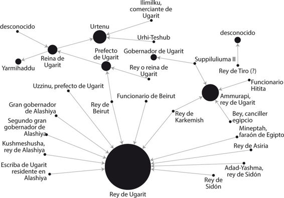
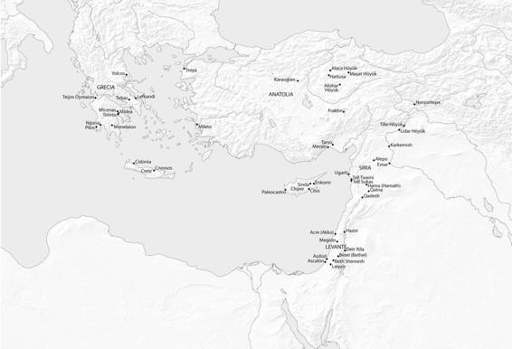
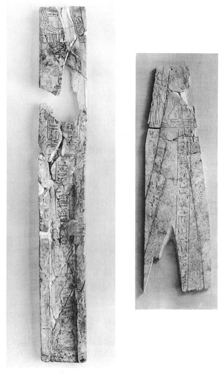

Este es el momento que estábamos esperando: el clímax de la historia y el dramático principio del fin de los más de trescientos años de existencia de la economía globalizada que caracterizó la Edad del Bronce tardía en el Egeo y el Mediterráneo oriental. El siglo XII a. C., como veremos en este último acto, se distingue más por los relatos de tragedia y destrucción que por las relaciones y el comercio internacionales, aunque todavía podamos empezar con el broche de oro de este último aspecto.
Se dice que la casualidad favorece a quien sale a buscarla, pero en algunos casos recibe su favor aun quien no la pretendía. Pues fue, en efecto, el descubrimiento accidental de un campesino —es de creer que no instruido en las artes de la arqueología— lo que ha permitido examinar y documentar la ciudad y el reino de Ugarit, situados en la costa oeste de Siria. En 1929, arqueólogos franceses viajaron hasta la zona ante la noticia del posible hallazgo de una tumba en la bahía de Minet el-Beida. Las excavaciones revelaron enseguida las ruinas de una ciudad portuaria, que hoy se conoce asimismo como Minet el-Beida. Al poco tiempo, del interior de un montículo moderno denominado Ras Shamra, situado a ochocientos metros tierra adentro, se sacó a la luz la capital de Ugarit.[1]
Desde entonces, tanto Ugarit como Minet el-Beida han sido yacimientos excavados de forma casi continua por los franceses, primero por Claude Schaeffer desde 1929, y, más recientemente, de 1978 a 1998, por Marguerite Yon. A partir de 1999, las tareas de recuperación han estado al cargo de un equipo franco-sirio.[2] La suma de todos estos trabajos ha revelado los restos de una ciudad y un puerto comerciales, prósperos, activos y ajetreados, que resultaron destruidos y fueron abandonados repentinamente en los primeros años del siglo XII a. C. Entre las ruinas se han encontrado productos de todo el Mediterráneo oriental y del Egeo; un almacén de Minet el-Beida, por ejemplo, aún conservaba ochenta recipientes cananeos. Por desgracia, se recuperaron en la década de 1930, cuando aún no se realizaban análisis científicos rigurosos de los contenidos.[3]
Desde la década de 1950, se ha recuperado cierto volumen de archivos importantes procedentes de casas particulares así como del palacio real de Ugarit, en los que se documentan las actividades económicas de diversos comerciantes, así como de la familia real de Ugarit. Las cartas y otros objetos de esos archivos se escribieron sobre tablillas de arcilla, como era habitual en la Edad del Bronce, pero con la particularidad de que usaron diversas lenguas: a veces las tablillas estaban escritas en acadio, otras en hitita, en egipcio e incluso en otras lenguas menos extendidas como el hurrita.
Se usaba también otra lengua que los investigadores no habían visto nunca. Fue descifrada con bastante rapidez y hoy la llamamos ugarítico. Usaba uno de los sistemas de escritura alfabética más antiguos conocidos; aunque en realidad, en los textos había dos sistemas de escritura alfabética, uno con veintidós signos, como el alfabeto fenicio, y el otro con ocho signos adicionales.[4]
Dentro del corpus de los textos de Ugarit —tan nutrido que ha generado toda una rama específica de la investigación moderna, conocida como «estudios ugaríticos»— no se incluyen solamente los archivos y la correspondencia de los comerciantes y el rey, sino también textos literarios, mitológicos, históricos, religiosos y otros, que pertenecieron a una civilización próspera consciente de su propio legado. El resultado es que podemos reconstruir la ciudad de Ugarit a partir de las ruinas y, a partir de sus textos, podemos recomponer también la vida cotidiana y los sistemas de creencias de sus habitantes. Por ejemplo, sabemos con certeza que rendían culto a un panteón de divinidades en el que El y Baal ocupaban un lugar destacado. Y conocemos los nombres de sus reyes, desde Ammistamru I y Niqmaddu II, cuyas cartas a Amenofis III y Ajenatón se encuentran en el archivo egipcio de Amarna, hasta el último de sus reyes, Ammurapi, que gobernó en la primera década del siglo XII a. C. También sabemos que los reyes de Ugarit se casaron con princesas de la vecina entidad política de Amurru y, probablemente, también del reino hitita, más extenso, celebrando matrimonios dinásticos con dotes realmente propias de un rey (aunque al menos una de aquellas uniones terminó en un divorcio agrio que se fue arrastrando por los tribunales durante varios años).[5]
Los ciudadanos y reyes de Ugarit mantuvieron relaciones comerciales intensas en todo el período de existencia de la ciudad. Se trataba, sin duda, de un centro de distribución internacional, a cuyo puerto, Minet el-Beida, arribaban navíos de múltiples naciones. Podría haber debido lealtad a Egipto durante la primera mitad del siglo XIV a. C., pero no cabe duda de que fue vasallo de los hititas a partir de la segunda mitad del siglo, después de que Suppiluliuma conquistase la zona, hacia 1350-1340 a. C. Los textos hallados en los distintos archivos del yacimiento, fechados en su mayoría en los últimos cincuenta años de existencia de la ciudad, dan testimonio de contactos entre Ugarit y numerosas entidades políticas, grandes o pequeñas, como por ejemplo Egipto, Chipre, Asiria, los hititas, Karkemish, Tiro, Beirut, Amurru y Mari. Recientemente, también el Egeo se ha añadido a la lista.[6]
Las tablillas también hacen mención específica de la exportación desde Ugarit de bienes perecederos, como lana teñida, prendas de lino, aceite, u objetos de plomo, cobre y bronce, en especial a los asirios, situados en el extremo este, en Mesopotamia; y también aluden a los abundantes contactos comerciales con Beirut, Tiro y Sidón, en la costa fenicia.[7] En la propia Ugarit se han recuperado objetos importados del Egeo, Egipto, Chipre y Mesopotamia, incluidas vasijas micénicas, una espada de bronce con la inscripción del nombre del faraón egipcio Mineptah, cientos de fragmentos de jarros de alabastro y otros productos de lujo.[8] Estos bienes, y otros más mundanos, como el vino, el aceite de oliva y el trigo, llegaban a Ugarit gracias al empeño de comerciantes como Sinaranu, a quien ya hemos conocido en estas páginas, dueño de un barco que navegó a Creta y regresó de la isla en algún momento de mediados del siglo XIV a. C. Sabemos que los habitantes de Ugarit disponían de riqueza suficiente para mandar a los hititas un tributo anual formado por quinientos siclos de oro, lana teñida y prendas de vestir, además de copas de oro y plata para el rey, la reina y los altos funcionarios hititas.[9]
En las últimas décadas se han recuperado otras tablillas, muchas en el interior de las casas; y algunas nos han obligado a cambiar la idea que nos habíamos hecho del fin de la ciudad; así, gracias a ellas, tenemos noticia de otros comerciantes ugaríticos que estuvieron en activo más adelante, en la época de la destrucción de Ugarit, a principios del siglo XII a. C.[10] Una de estas casas, conocida como la «Casa de Yabninu», está situada cerca de la parte sur del palacio real. La casa en sí aún no ha sido excavada por completo, pero ya sabemos que ocupó al menos un millar de metros cuadrados, de modo que Yabninu tuvo que ser, por fuerza, un comerciante próspero. Creemos que las sesenta tablillas, o más, descubiertas en las ruinas de esta casa se habían guardado originalmente en la segunda planta. Entre ellas hay documentos escritos en acadio y ugarítico, y también en la lengua ciprio-minoica —aún por descifrar—, utilizada principalmente en la isla de Chipre, pero documentada también en vajillas de Tirinto, en la Grecia continental. Los textos de las tablillas, así como objetos importados hallados en la casa, demuestran que Yabninu estableció tratos comerciales con Chipre, la costa levantina (más hacia el sur), Egipto y el Egeo.[11]
Otro juego de tablillas se encontró en la «Casa de Rapanu», excavada en 1956 y 1958. Las tablillas —más de doscientas, en total— fueron estudiadas prontamente y publicadas al cabo de una década, en 1968. Nos indican que Rapanu fue escriba y gran consejero del rey de Ugarit, muy probablemente de Ammistamru II (hacia 1260-1235 a. C.). Al parecer, según el contenido del archivo, Rapanu participó en algunas negociaciones delicadas al más alto nivel. Los textos incluyen cierta cantidad de cartas intercambiadas entre el rey de Ugarit y el rey de Chipre (Alashiya), escritas en la época en que los Pueblos del Mar los amenazaban a ambos. También hay cartas destinadas al rey de la cercana Karkemish y, a más distancia, al faraón egipcio; este último juego se ocupa de cierto incidente que implicaba a cananeos de la costa levantina.[12]
Una de las cartas trata del comercio de aceite entre Ugarit y Chipre. La mandó Niqmaddu III, el penúltimo rey de Ugarit, e iba dirigida al rey de Alashiya, a quien él llama «padre», y se refiere a sí mismo como «tu hijo».[13] A menos que el rey de Ugarit se hubiera casado con una princesa chipriota, lo cual no es imposible, parece que el uso de la palabra «padre» se ajusta a la terminología habitual en la época, que pretendía trabar una relación familiar al mismo tiempo que se reconocía la precedencia (por ser más poderoso o de mayor edad) del rey de Chipre sobre el de Ugarit. Otra de las cartas de esta casa ya ha sido mencionada aquí: la que describía la llegada de naves enemigas a Ugarit, que a juicio de Schaeffer se descubrió en el horno donde se cocía antes de mandarla al rey de Chipre. Más adelante nos ocuparemos de este texto.
Algunas de las tablillas recuperadas más recientemente son las de la «Casa de Urtenu». Esta residencia se descubrió accidentalmente, en la zona sur del yacimiento, durante las obras de construcción de un búnker militar en 1973. Los arqueólogos tuvieron permiso para inspeccionar el montón de escombros acumulado por las excavadoras, que sin saberlo destruyeron el centro de la casa, y encontraron varias tablillas, todas ya publicadas hoy en día. Las tablillas más nuevas provienen de las meticulosas excavaciones realizadas entre 1986 y 1992, también publicadas, y de los trabajos llevados a cabo entre 1994 y 2002, cuyos frutos son aún objeto de estudio. En total, en este archivo hay más de quinientas tablillas —de las que 134 se encontraron en 1994— con una mayoría de textos escritos en acadio, y una pequeña minoría en ugarítico. La correspondencia incluye cartas de los reyes de Egipto, Chipre, Hatti, Asiria, Karkemish, Sidón, Beirut y, posiblemente, Tiro.[14] Al parecer, una de las más antiguas fue enviada por un rey de Asiria, probablemente Tukulti-Ninurta I, a un rey de Ugarit, quizá Ammistamru II o Ibirana, y trata de la batalla en que Tukulti-Ninurta y los asirios derrotaron a Tudhaliya IV y los hititas.[15]
Tal como ha señalado uno de los arqueólogos, las tablillas indican que Urtenu estuvo en activo a principios del siglo XII a. C., y que gozaba de un elevado estatus social. Según parece, fue agente de una gran compañía comercial dirigida por el yerno de la reina, que mantenía tratos comerciales con la ciudad de Emar, en la Siria interior, además de con la vecina Karkemish. También participó en negociaciones y convenios con la isla de Chipre, entre otras operaciones comerciales de larga distancia.[16] De hecho, las cinco cartas descubiertas en la casa que provenían de Chipre son de una importancia extrema, puesto que incluyen —por primera vez en la historia— el nombre de un rey del Chipre de la Edad del Bronce: un hombre al que llamaban Kushmeshusha. Tenemos dos cartas de este rey, además de dos misivas de grandes gobernadores de la isla; y una carta bastante enigmática, de un escriba ugarítico que por alguna razón residía en Chipre. Estas cinco cartas se unen ahora a las otras cuatro de Alashiya que ya se habían descubierto en la Casa de Rapanu.[17]

Fig. 9. Cartas reales del archivo de Urtenu en Ugarit (muestra ejemplificadora, no exhaustiva; nodos = sujetos que reciben o envían cartas; líneas = pares que mantienen correspondencia; tamaño de los círculos = cantidad de cartas; creación de D. H. Cline).
En la casa también hay otras dos cartas que contienen referencias a dos «hombres de Hiyawa», de quienes se dice que aguardan en la tierra de Lukka (conocida más tarde como Licia), al suroeste de Anatolia, a que llegue un barco de Ugarit. Las cartas fueron enviadas a Ammurapi, el último rey de Ugarit, por un rey hitita (que probablemente podamos identificar con Suppiluliuma II) y uno de sus funcionarios principales. Estas son las dos primeras referencias conocidas, dentro de los archivos ugaríticos, a personas del Egeo, porque sin duda alguna «Hiyawa» guarda relación con la palabra hitita «Ahhiyawa», que, como hemos visto, muchos investigadores asocian con los micénicos y el Egeo de la Edad del Bronce.[18]
También hay una carta del faraón Mineptah de Egipto, en respuesta a una petición del rey de Ugarit —o Niqmaddu III o Ammurapi—, que solicitaba el envío de un escultor para labrar y erigir una estatua del faraón y colocarla en la ciudad, concretamente frente a un templo dedicado a Baal. Al mismo tiempo que el faraón transmite su negativa en la carta, enumera una larga lista de productos de lujo que se mandaban de Egipto a Ugarit. La mercancía se estaba cargando en un barco con rumbo a Ugarit, decía el faraón, e incluía más de cien telas y piezas de ropa, además de un surtido de otros artículos como madera de ébano y planchas de piedra roja, blanca y azul.[19] De nuevo, debemos señalar que casi todos estos productos son perecederos y no habrán sobrevivido en el registro arqueológico. Es una suerte, por tanto, que este texto los mencione; de otro modo, tal vez jamás habríamos sabido que existieron y se comerció con ellos entre Egipto y Ugarit.
Otra carta de este archivo es de un mensajero/representante llamado Zu-Aštarti, que habla sobre el barco en el que ha navegado desde Ugarit. Afirma que sufrió una demora en el camino. Algunos investigadores se han preguntado si tal vez fue secuestrado, pero él solo escribe: «En el sexto día, me hallaba en el mar. Un viento me arrastró y llegué al territorio de Sidón. Me llevó desde Sidón a la tierra de Ušnatu, y en Ušnatu estoy retenido. Que mi hermano lo sepa… Di al rey: “Si han recibido los caballos que el rey entregó al mensajero de la tierra de Alashiya, entonces un compañero del enviado acudirá a ti. Que le entreguen esos caballos en su mano”».[20] No queda del todo claro por qué estuvo «retenido» en Ušnatu, y ni siquiera sabemos por qué la carta está en los archivos de Urtenu; pero es posible que, en aquella época, en Ugarit el comercio de caballos fuese una actividad protegida por el estado. Una carta de la misma época, encontrada en la Casa de Rapanu y enviada por el rey hitita Tudhaliya IV a Ammistamru II, afirma que el rey de Ugarit no debe permitir la exportación de caballos a Egipto por parte de mensajeros/comerciantes egipcios o hititas.[21]
Las pruebas textuales de los distintos archivos y casas de Ugarit transmiten que el comercio y los contactos internacionales seguían con intensidad hasta el último momento. De hecho, uno de los responsables de la publicación de las cartas de la Casa de Urtenu señaló, hace ya casi veinte años, que apenas había indicios de problemas, salvo la mención de los barcos enemigos en una de las misivas, y que, al parecer, las rutas comerciales estuvieron abiertas hasta el final.[22] Lo mismo puede afirmarse de Emar, en el río Éufrates, a bastante distancia en el interior de Siria, donde se ha señalado que «los escribas estaban realizando su trabajo con normalidad hasta el final».[23]
Pese a todo, Ugarit quedó destruido, y al parecer con mucha violencia, durante el reinado de Ammurapi, muy probablemente entre 1190 y 1185 a. C. La ciudad no volvió a ser ocupada hasta el período persa, aproximadamente 650 años más tarde.[24] Los excavadores hablan de «pruebas de destrucción y fuego por toda la ciudad», e incluyen «muros derrumbados, tapiales quemados y montones de cenizas», con un nivel de destrucción que, en algunos lugares, alcanzaba los dos metros de altura. Marguerite Yon, la última directora de las excavaciones, dice que los techos y las terrazas en los barrios residenciales se hallaron derruidos y que en todas partes los muros «habían quedado reducidos a un montón informe de escombros». Ella cree que la destrucción se debió a un ataque enemigo, más que a un terremoto, como Schaeffer había sugerido anteriormente, y que en la ciudad hubo luchas violentas con combate en las propias calles. Según Yon, así lo demuestra «la presencia de numerosas puntas de flecha desperdigadas entre las ruinas abandonadas o destruidas», así como el hecho de que los habitantes —unos ocho mil— huyeran apresuradamente y no regresaran ni siquiera para recoger las pertenencias más valiosas, que algunos enterraron antes de irse.[25]

Fig. 10. Sitios destruidos hacia 1200 a. C.
La fecha exacta en que sucedió todo esto ha sido objeto de debate en los últimos años. La prueba más concluyente es una carta hallada en 1986, en la Casa de Urtenu. La misiva iba dirigida a Ammurapi, el rey de Ugarit, y la mandaba un canciller egipcio llamado Bey, que sabemos —gracias a fuentes egipcias— que fue ejecutado en el quinto año de reinado del faraón Siptah. Siptah fue el penúltimo faraón de la Dinastía XIX en Egipto, que gobernó hacia 1195-1189 a. C., es decir, unos pocos años antes que Rameses III de la Dinastía XX. Así, la carta puede fecharse con cierta seguridad antes de 1191 a. C., cuando se produjo la ejecución de Bey, y esto significa también que la destrucción de la ciudad no puede haber sucedido antes de esta fecha. Por ello, la destrucción de la ciudad suele fecharse entre 1190 y 1185 a. C., aunque técnicamente podría haber sido aún más tarde.[26] Un artículo reciente ha señalado que esta fecha puede corroborarse ahora atendiendo a una observación astronómica descubierta en otra tablilla de Ugarit. Allí se registra un eclipse de sol que cabe situar el 21 de enero de 1192 a. C., lo cual significa también que la ciudad no pudo haber sido destruida antes de esa fecha.[27]
En contra de anteriores versiones populares sobre el fin de Ugarit,[28] probablemente no podemos usar la famosa carta del Archivo del Sur, encontrada en el patio V del palacio de Ugarit, ni para fechar la destrucción ni para identificar a los destructores. Esta era la carta que, según Schaeffer, fue descubierta en el horno donde se cocía antes de mandarla al rey de Chipre. Comienza así: «Mi padre, ahora han llegado las naves del enemigo. Han estado prendiendo fuego a mis ciudades y destrozando las tierras». Según el informe original, fue hallada en un horno, entre más de setecientas tablillas, a punto para ser cocidas. Los excavadores y otros estudiosos conjeturaron, al principio, que los barcos enemigos habían regresado y saqueado la ciudad antes de que se pudiera enviar la petición de ayuda urgente; y esta es la versión que, en las últimas décadas, se ha ido repitiendo una y otra vez en las historias tanto de ámbito académico como popular. Sin embargo, la reciente revisión del lugar del hallazgo por parte de otros investigadores indica ahora que, en realidad, no se encontró en un horno, sino que probablemente estaba almacenada en un cesto que cayó desde la segunda planta una vez abandonado el edificio.[29]
Como resultado, aunque la carta se puede usar para debatir sobre la presencia de barcos enemigos y, probablemente, invasores, no está claro que corresponda a los últimos días de Ugarit o a un período ligeramente anterior. Y aun si hiciera referencia a las naves de los Pueblos del Mar, es posible que se remonte a la primera oleada de invasores, los que atacaron Egipto en 1207 a. C., en lugar de pertenecer a la segunda, que luchó contra Rameses III en 1177 a. C.
El yacimiento de Emar, en el interior de Siria, con el que Ugarit estaba en contacto, también fue destruido aproximadamente en la misma época, en 1185 a. C., como sabemos por la fecha que aparece en un documento legal hallado allí mismo. Pese a todo, no está claro quién provocó la destrucción en Emar. Las tablillas recuperadas allí hablan de «hordas» sin nombre, pero no señalan directamente a los Pueblos del Mar, según han observado algunos estudiosos.[30]
El yacimiento de Ras Bassit, situado en la frontera norte de Ugarit, también quedó destruido hacia la misma época. Los arqueólogos creen que se trataba de un puesto avanzado de Ugarit y afirman que, hacia 1200 a. C., fue «evacuado en parte y en parte abandonado, y luego se le prendió fuego, como al resto de lugares de la región». Atribuyen la destrucción a los Pueblos del Mar, pero no es una conclusión definitiva.[31]
Se ha descrito una situación parecida en Ras Ibn Hani, en la costa, al sur de la misma Ugarit, en lo que se considera fue una residencia secundaria de los reyes ugaríticos durante el siglo XIII a. C. Los responsables de la excavación, y otros expertos, entienden que este lugar fue evacuado poco antes de la destrucción de Ugarit, y luego arrasado por los Pueblos del Mar. Fue reocupado de inmediato, al menos en parte, igual que Ras Bassit; y, sobre la base de la alfarería descubierta en estos niveles de reocupación, se ha identificado a los destructores y los nuevos ocupantes, en uno y otro lugar, como Pueblos del Mar. Más adelante nos ocuparemos de esta cuestión.[32]
Tal vez la mejor prueba, y sin duda la más reciente, de la extensa destrucción vivida en esta época se ha encontrado en Tell Tweini, un yacimiento de Gibala, ciudad portuaria de la Edad del Bronce tardía, situada en el reino de Ugarit, unos treinta kilómetros al sur de la ciudad moderna de Latakia. Aquí, el lugar fue abandonado tras una «intensa destrucción» ocurrida hacia el final de la Edad del Bronce tardía. Según los responsables de la excavación, «los estratos de destrucción contienen vestigios de conflictos (puntas de lanza de bronce diseminadas por la ciudad, muros derruidos, casas quemadas), cenizas del incendio de las casas, y colecciones de cerámica de cronología muy delimitada, fragmentadas por el colapso de la ciudad».[33]
Al fechar esta capa de destrucción a partir de la «arqueología estratificada según el radiocarbono» y «puntos de anclaje en fuentes antiguas epigráfico-literarias, reyes hititas, levantinos y egipcios, y observaciones astronómicas», los excavadores afirman que por fin han sido capaces de «fechar con precisión la invasión de los Pueblos del Mar en [el] Levante septentrional» y «ofrecer la primera cronología sólida para este período clave en la sociedad humana».[34] Los resultados que el laboratorio ha dado para los análisis del radiocarbono del estrato general de cenizas (Nivel 7A) señalan un intervalo concreto entre 1192 y 1190 a. C.[35] Sin embargo, aunque hayan podido fechar adecuadamente la destrucción de este yacimiento de la Edad del Bronce tardía, los arqueólogos solo han ofrecido pruebas circunstanciales de que los causantes de la destrucción fueran los Pueblos del Mar; lo veremos más adelante.
También es importante señalar que esta fecha (1192-1190 a. C.) es entre trece y quince años anterior a 1177 a. C., año de la batalla de Rameses III contra los Pueblos del Mar. Incluso las destrucciones de otros lugares, fechadas en 1185 a. C., siguen antecediendo en ocho años al conflicto definitivo. Quizá deberíamos preguntarnos cuánto tiempo habría tardado un grupo migratorio como el propuesto en abrirse camino a través del Mediterráneo, o tan solo bajando por la costa levantina hasta Egipto. Esto, sin embargo, dependería claramente de su capacidad de organización, los medios de transporte y los objetivos finales, entre otros factores, y no se puede ofrecer una respuesta fácil.
Por último, deberíamos pensar también en un yacimiento situado más al sur, Tell Kazel, en la región de Amurru, que podría haber sido el emplazamiento de la antigua Ṣumur, la capital del reino. El lugar fue asolado a finales de la Edad del Bronce tardía y los responsables de la excavación han conjeturado, de forma verosímil, que los Pueblos del Mar fueron los agentes de la destrucción, más aún, cuando Rameses III lo menciona específicamente (esto es, menciona Amurru) en sus inscripciones sobre los Pueblos del Mar. Sin embargo, en el estrato de ocupación inmediatamente anterior a la destrucción, los arqueólogos han identificado lo que parece ser alfarería micénica de producción local y otros elementos que sugieren la presencia de nuevos habitantes del Egeo y el Mediterráneo occidental.[36] Así, Reinhard Jung de la Universidad de Viena, que ha estudiado esta cerámica, plantea la hipótesis de que «antes que la gran destrucción de los Pueblos del Mar, grupos menos numerosos llegaron en barco a Tell Kazel y se integraron con la población local». Para él, se trata de un modelo de inmigración propio del Egeo, a pequeña escala, pero con señales de que parte de la gente implicada tenía raíces más antiguas en el sur de la Italia continental.[37] Si está en lo cierto, esto nos da una idea de la complejidad del período y los pueblos potencialmente afectados, llegando incluso al extremo de que las destrucciones provocadas por la segunda oleada de los Pueblos del Mar, hacia 1177 a. C., podrían haber caído sobre anteriores inmigrantes de idéntico origen que ya se habían instalado en el Mediterráneo oriental, tal vez durante las incursiones de los primeros Pueblos del Mar (en el quinto año del reinado de Mineptah, en 1207 a. C.), tal vez algo después.
Durante este mismo período, en el siglo XII a. C., varias ciudades y poblaciones del sur de Siria y Canaán resultaron destruidas. Al igual que en el norte de Siria, no sabemos con certeza quién las destruyó o en qué fecha exacta, aunque en el estrato de la destrucción del pequeño yacimiento de Deir ’Alla, en Jordania, se recuperó una vasija con un cartucho de la reina egipcia Tausert (o Twosret). Era la viuda del faraón Seti II y sabemos que gobernó entre 1187 y 1185 a. C. Por lo tanto, probablemente podríamos fechar la destrucción poco después de este momento. Lo mismo vale para el yacimiento de Acre (Akko), en la actual Israel, donde se recuperó de los escombros un escarabeo similar de Tausert.[38] En Beth Shan, las excavaciones de Yigael Yadin revelaron pruebas de que la presencia egipcia en el lugar acabó con un final violento.[39]
Quizá los lugares más famosos de la zona con pruebas de destrucción sean Megido y Laquis. Pese a todo, la naturaleza y cronología del derrumbamiento de esta región siguen siendo objeto de polémica. Según parece, ambas ciudades fueron destruidas varias décadas más tarde de lo que cabría esperar según la cronología de los yacimientos mencionados arriba, porque tanto en el caso de Megido como en el de Laquis, parece ser que la destrucción se produjo hacia 1130 a. C., y no en 1177 a. C.[40]
En Megido —el emplazamiento del Apocalipsis bíblico, sito en el valle de Jezreel del Israel moderno—, se han descubierto cerca de veinte ciudades, en estratos, una encima de otra. De estas, la séptima ciudad tuvo dos fases, denominadas VIIB y VIIA, que fueron destruidas de forma violenta o bien en los siglos XIII y XII a. C., respectivamente, o tal vez en un solo asalto en el siglo XII a. C.
Tradicionalmente, desde que los arqueólogos de la Universidad de Chicago publicaron los descubrimientos de sus excavaciones de los yacimientos, realizadas entre 1925 y 1939, se ha aceptado que el Estrato VIIB se acabó en algún momento entre 1250 y 1200 a. C., pero la próspera ciudad posterior, la del Estrato VIIA, vio su fin hacia 1130 a. C. En estos estratos se hallaron vestigios de un palacio cananeo, o quizá los restos de dos palacios, uno edificado sobre las ruinas del otro.
Según los arqueólogos de Chicago, el palacio del Estrato VIIB «sufrió una destrucción violenta tan extensa que los constructores del Estrato VIIA consideraron más oportuno arrasar los escombros antiguos y construir encima, en lugar de retirarlo todo, como se acostumbraba a hacer en las tareas de reconstrucción previas». Las habitaciones «estaban llenas de piedras caídas que se amontonaban hasta alcanzar una altura de cerca de metro y medio… Las líneas horizontales carbonizadas, halladas aquí y allá en las paredes de las salas situadas al norte del patio… son indicadoras del nivel general de la planta a lo largo de todo el palacio».[41] Entonces se entendía que el palacio del Estrato VIIA, construido directamente encima, había estado en pie hasta 1130 a. C. aproximadamente.
Sin embargo, hace poco David Ussishkin, arqueólogo de la Universidad de Tel Aviv y codirector (recientemente retirado) de la Expedición de Megido, ha sugerido de forma convincente que los excavadores de Chicago interpretaron mal los estratos. En lugar de dos palacios, uno encima del otro, Ussishkin cree que deberíamos interpretar esta estructura como un único palacio de dos plantas, renovado ligeramente durante la transición de VIIB a VIIA, hacia 1200 a. C. Defiende que hubo una única destrucción, un gran incendio que acabó con el palacio al final del Estrato VIIA. Según Ussishkin, lo que a juicio de los arqueólogos de Chicago era el «palacio VIIB» no era sino la planta baja del palacio, mientras que el «palacio VIIA» era la planta superior. El templo principal de la ciudad (llamado Templo de la Torre) también fue destruido en aquella época, pero las excavaciones más recientes en el yacimiento indican que buena parte del resto de la ciudad sobrevivió; al parecer, en esas fechas solo se prendió fuego a los barrios de élite.[42]
Este estrato de destrucción VIIA suele fecharse hacia 1130 a. C., tomando como base dos objetos inscritos con cartuchos egipcios, que se recuperaron entre los escombros. El primero es un estuche para plumas, de marfil, con la inscripción del nombre de Rameses III, que se halló junto a otros tesoros ebúrneos en una de las habitaciones del palacio, en un contexto que, al quedar sellado por los propios escombros, se libró de la destrucción.[43] Esto implicaría que el desastre tuvo lugar en algún momento del reinado de Rameses III, o algo después (en 1177 a. C. o más tarde).
Las piezas de marfil descubiertas en esta habitación del interior del palacio se cuentan entre los objetos más famosos del yacimiento de Megido. Hay también, entre otros muchos artículos, fragmentos de cajas y boles, placas, cucharas, discos, juegos de mesa con sus fichas, tapas de botes, y peines. Ahora están expuestos en el Oriental Institute de la Universidad de Chicago y el Museo Rockefeller de Jerusalén. No está claro por qué alguien reunió todas esas piezas de marfil ni por qué estaban en este lugar en concreto del palacio. Pese a todo, llevan años siendo objeto de estudio, porque los marfiles en sí, al igual que las escenas grabadas en ellos, son testimonio de un estilo indudablemente globalizado, que hoy se suele denominar «estilo internacional», y del que se han hallado otras muestras en yacimientos de Ugarit y Micenas. Este estilo característico combina elementos de las culturas egipcia, cananea y micénica, lo que produjo objetos híbridos exclusivos —y representativos— de esta época de cosmopolitismo.[44]

Fig. 11. Estuche para plumas, de marfil, del faraón Rameses III, procedente de Megido (según Loud, 1939, lám. 62; por cortesía del Oriental Institute de la Universidad de Chicago).
El segundo objeto de importancia recuperado en Megido es el pedestal de una estatua de bronce con la inscripción del nombre del faraón Rameses VI, que gobernó algunas décadas después, entre 1147 y 1133 a. C. aproximadamente. Ahora bien, este artículo no se encontró en un contexto arqueológico seguro, sino bajo una pared del Estrato VIIB, en la zona residencial del yacimiento. Como ha señalado Ussishkin, no se trata de un contexto fiable, porque el Estrato VIIB era muy anterior en el tiempo a Rameses VI. Esto significa que la base de la estatua tuvo que ser enterrada deliberadamente en un agujero cavado por un habitante posterior, ya fuera en el período VIIA o incluso en la época de la ciudad VIB-A, ya en la Edad del Hierro. Los arqueólogos suelen adscribir la base al Estrato VIIA, pero no es más que una conjetura.[45]
Estos dos objetos, de Rameses III y VI, siempre se han estudiado juntos en las publicaciones relevantes y, por ello, la destrucción de Megido VIIA se fecha después del reinado de Rameses VI, o hacia 1130 a. C. Pese a todo, como el pedestal de la estatua de bronce de Rameses VI no se halló en un buen contexto, no debería utilizarse para determinar el final de Megido VIIA. En cambio, el estuche para plumas de Rameses III quedó sellado dentro del estrato de la destrucción de VIIA y, por lo tanto, puede usarse con confianza para presentar una fecha límite (en concreto, el reinado de este faraón) antes de la cual la ciudad no podía haber sido destruida. Esto encajaría bien con las pruebas de destrucción halladas en varios otros yacimientos del Oriente Próximo, según hemos visto en estas páginas.
Ahora bien, la arqueología es un campo en constante evolución, con datos nuevos y nuevos análisis que requieren una continua reevaluación de los antiguos conceptos. A este respecto, los estudios en marcha que fechan restos hallados en el estrato de destrucción de VIIA por medio del radiocarbono indican hoy que, después de todo, probablemente la fecha acertada sea la de 1130 a. C., o quizá más tarde incluso. Si se demuestra que es un cálculo preciso, entonces Megido habría caído más de cuarenta años después de que los Pueblos del Mar llegaran a la región, en 1177 a. C.[46] En cualquier caso, como ha señalado Ussishkin, «la falta de fuentes escritas deja [sin responder] la pregunta de quiénes fueron los responsables de la destrucción del Estrato VIIA… Tal vez la ciudad fue asaltada con éxito por grupos invasores de los Pueblos del Mar, por grupos cananeos del Levante, por los israelitas o por una fuerza conjunta de distintos grupos».[47] Dicho de otro modo, en Megido nos encontramos con la misma situación que la que hemos visto en el estrato relevante de Hazor, descrito más arriba, donde se destruyeron las zonas más exclusivas la ciudad, pero no podemos identificar a los responsables del desastre.
Laquis (Lachish), otro yacimiento del moderno Israel, también padeció dos destrucciones durante este mismo período, aproximadamente, si está en lo cierto David Ussishkin, el arqueólogo que excavó en la zona de 1973 a 1994.[48] Aquí, en este yacimiento de estratos múltiples situado al sur de Jerusalén, las ciudades séptima y sexta (Estratos VII y VI) están identificadas como las últimas ciudades cananeas, tomando como base los restos materiales hallados durante las excavaciones. Este período, contemporáneo al control egipcio de la región, fue de gran prosperidad para Laquis. Se trataba de una de las mayores ciudades del Canaán de la época, con una población de cerca de seis mil habitantes, así como grandes templos y edificios públicos en el interior de la propia ciudad.[49]
Se cree que la ciudad del Estrato VII quedó arrasada por el fuego hacia 1200 a. C., pero los responsables de la excavación no han formulado conjeturas sobre la naturaleza de la destrucción o su posible agente. En parte ha sido así porque no se sabe con certeza cuánta parte de la ciudad se destruyó efectivamente. Por ahora, solo hay pruebas de una destrucción feroz en los restos de uno de los templos (bautizado como «tercer Templo del Foso») y una zona de uso doméstico en el Área S.[50] Podríamos pensar que la destrucción fue el resultado de la primera oleada de invasiones de los Pueblos del Mar, que llegaron a la región hacia 1207 a. C., pero no disponemos de pruebas para tal atribución.
La ciudad del Estrato VI ha recibido el grueso de la atención de los investigadores, hasta la fecha. Según parece, los supervivientes de la conflagración del Estrato VII se limitaron a reconstruir la ciudad, en su totalidad o en partes, y continuaron con la misma cultura material que ya tenían. Se cree que la ciudad del Estrato VI fue aún más rica y próspera que la que acababa de ser destruida, con un colosal edificio público (el Edificio Columnado) construido en el Área S, donde antes se alzaban las estructuras domésticas. También se erigió un templo nuevo, en el Área P, del que apenas quedan vestigios por la destrucción que padeció luego. En este estrato, se han hallado por toda la ciudad objetos importados de Egipto, Chipre y el Egeo, principalmente vasijas de cerámica, lo cual testimonia sus contactos internacionales.[51]
Se cree que, en la ciudad del Estrato VI, se produjo una afluencia de refugiados pobres justo antes de que grandes sectores de la población quedaran asolados.[52] Una estructura en concreto, el Edificio Columnado del Área S, «fue destruido de forma repentina y violenta; capas de cenizas y ladrillos de adobe caídos cubrían toda la estructura, y debajo de la pared derruida se encontraron atrapados varios esqueletos de adultos, niños y bebés».[53] Otros edificios de Laquis también quedaron arrasados en la misma época, a la que siguió un período de abandono de hasta tres siglos.[54] Según Ussishkin: «La ciudad del Estrato VI quedó asolada con una destrucción violenta y feroz, de la que se detectan vestigios en todos los puntos donde han salido a la luz restos del Estrato VI… La destrucción fue total y la población fue eliminada o expulsada».[55]
Arqueólogos anteriores pensaron que la ciudad había caído a finales del siglo XIII a. C., hacia 1230 a. C. (y la ciudad del Estrato VII habría sido devastada incluso antes),[56] pero ahora Ussishkin ha modificado bastante la fecha de la destrucción del Estrato VI, basándose ante todo en el descubrimiento de una placa de bronce (posiblemente, parte del cerrojo de una puerta) con el cartucho de Rameses III. Esta placa se halló entre un tesoro de objetos de bronce defectuosos o rotos, sepultado y sellado bajo los escombros de la destrucción de la ciudad del Estrato VI.[57]
Igual que sucedía con el estuche para plumas de Rameses III en Megido, el contexto en que se descubrió este objeto en Laquis indica que la destrucción de la ciudad no pudo producirse antes de la época de Rameses III. En consecuencia, Ussishkin empezó fechando la destrucción hacia 1150 a. C., basándose en el hecho de que la placa de bronce no podía haberse realizado antes del acceso al trono de Rameses III, en 1184 a. C., y en su convicción personal de que hay que conceder un tiempo «para que [la placa] se use, se rompa y acabe descartada y abandonada en ese tesoro de objetos de bronce defectuosos o rotos».[58]
Posteriormente adelantó la fecha hasta 1130 a. C., tras saber que los arqueólogos británicos que habían estudiado antes el yacimiento habían encontrado un escarabeo de Rameses IV, probablemente en ese mismo estrato. También apeló a una comparación con Megido VII: Ussishkin argumentaba que, si Megido había durado tanto tiempo, era probable que lo mismo sucediera con Laquis.[59] Otro estudioso ha señalado recientemente que podría haber otro escarabeo de Rameses IV en la Tumba 570 de Laquis, pero también ha llamado la atención sobre el hecho de que la lectura del nombre del faraón, en ambos escarabeos, no es del todo segura, y que la estratigrafía del contexto del primero no está del todo clara.[60]
De este modo, volvemos a encontrarnos una vez más como en los otros yacimientos que hemos analizado: no se sabe con certeza quién o qué provocó la destrucción de Laquis, ni tan solo cuándo tuvo lugar; lo único que podemos afirmar con seguridad es que se produjo durante el reinado de Rameses III o con posterioridad a este. Como afirma Ussishkin, «las pruebas apuntan a la devastación del Estrato VI por parte de un enemigo fuerte y resuelto, pero los datos arqueológicos no nos dan ninguna clave directa sobre la naturaleza e identidad de ese enemigo o de las circunstancias inmediatas que rodearon la caída de la ciudad».[61] El arqueólogo recuerda que los investigadores anteriores han propuesto tres candidatos: el ejército egipcio, las tribus israelitas y la invasión de los Pueblos del Mar, pero también llama la atención sobre el hecho de que «no se han hallado vestigios de combates, más allá de una única punta de lanza, de bronce… que se descubrió en el Edificio Columnado del Área S».[62]
Es poco probable que los egipcios fueran los causantes de la destrucción, porque, cuando estaba sometido a ellos, Laquis era un lugar próspero con el que mantenía un comercio activo, según demuestran los distintos artículos inscritos con cartuchos reales hallados entre las ruinas. Sigue siendo posible que la destrucción se debiera a los israelitas, al mando de Josué, tal como defiende William F. Albright, de la Universidad Johns Hopkins, aunque eso era cuando se creía que la destrucción se situaba hacia 1230 a. C.[63]
Ussishkin opta por identificar a los Pueblos del Mar como los agentes más probables de la desolación de la ciudad del Estrato VI. Aquí sigue a Olga Tufnell, que excavó en Laquis antes que él.[64] Sin embargo, no ofrece pruebas de que los responsables fueran realmente los Pueblos del Mar; solamente vemos el resultado final de la destrucción, sin señales de quién la provocó. A esto se suma que la fecha de 1130 a. C. podría parecer demasiado tardía (unas cuatro décadas) para los Pueblos del Mar, como en la destrucción de Megido. Tenemos que señalar, en cualquier caso, que Ussishkin podría haber cometido un error al vincular la destrucción de Laquis con la de Megido y situarla tan tarde; no hay razones sólidas para conectarlas, de modo que tal vez debiéramos decantarnos por su primera datación de hacia 1150 a. C. (o quizá incluso antes, si el cerrojo de bronce de Rameses III no se usó durante mucho tiempo).
También cabe la posibilidad de que un terremoto colosal provocase la destrucción de la ciudad del Estrato VI. Los cuerpos de las cuatro personas fallecidas en el Edificio Columnado se encontraron «aparentemente atrapados y aplastados bajo los escombros mientras intentaban huir». Un niño de entre dos y tres años «o bien se precipitó contra el suelo boca abajo o murió mientras se arrastraba por el suelo», mientras que un bebé «se cayó o fue lanzado contra el suelo».[65] Estas observaciones, junto con el hecho de que nadie encontró armas entre los escombros, señalan a la Madre Naturaleza, antes que a un agente humano, como también podría haber sucedido en otros lugares hacia finales de la Edad del Bronce tardía.[66] En contra de esta hipótesis destaca que los responsables de la excavación no encontraron otras pruebas de un seísmo, como muros inclinados o agrietados. Además, parece ser que el nuevo templo cananeo edificado en el Área P fue objeto de saqueo y pillaje antes de ser asolado por el fuego, lo cual indicaría una presencia humana.[67]
En resumen, como en el caso de Hazor y Megido, no hay certidumbre sobre quién destruyó Laquis VI o la ciudad anterior de Laquis VII. Las dos, o ninguna de ellas, podrían haber sido asoladas por los Pueblos del Mar, por otros pueblos o por otros elementos. Tal como ha señalado James Weinstein, de la Universidad de Cornell: «aunque los Pueblos del Mar quizá acabaran con los destacamentos de Egipto en la Palestina del sur y del oeste, debemos contemplar también la posibilidad de que otros grupos que no fueran de los Pueblos del Mar llevaran la ruina a otras zonas del país».[68]
Los yacimientos del sur de Canaán revisten especial interés, incluidos los que se identifican en la Biblia y otros lugares como integrantes de la llamada «pentápolis filistea», las cinco grandes ciudades de los filisteos: Ascalón, Asdod, Ecrón, Gat y Gaza.
A finales de la Edad del Bronce tardía, las antiguas ciudades cananeas de Ecrón y Asdod fueron asoladas con violencia y sustituidas por nuevos asentamientos en los que hubo un cambio casi completo de la cultura material, incluida la alfarería, los fogones u hogares, las bañeras, los artículos de cocina y la arquitectura. Esto parece indicar un cambio en la población, o bien una afluencia demográfica muy importante —al parecer, de filisteos— tras el hundimiento de Canaán y la retirada de las fuerzas egipcias de la zona.[69]
Trude Dothan, profesora emérita en la Universidad Hebrea de Jerusalén y antigua codirectora de las excavaciones de Ecrón, situadas en la actual Tel Miqne, ha descrito el fin de la ciudad de la Edad del Bronce tardía en Ecrón de este modo: «En el Campo I, la ciudad alta o acrópolis, se puede comprobar la destrucción total de la última ciudad cananea de la Edad del Bronce tardía por efecto del fuego. Aquí la destrucción es evidente: bajo los ladrillos de adobe de las paredes derrumbadas, permanecen enterrados los restos de un gran edificio de almacenamiento de ladrillos de adobe, recipientes con vestigios de higos y lentejas, y un silo grande y bien conservado… La nueva ciudad filistea queda al nivel de la destrucción del asentamiento de la Edad del Bronce tardía en la ciudad alta, y al nivel del campo abierto de la ciudad baja de la Edad del Bronce intermedia».[70]
Una situación similar parece haberse dado en Ascalón, donde recientes excavaciones han documentado la conversión del lugar, que en algún momento de la primera mitad del siglo XII a. C. —probablemente, justo después del reinado de Rameses III, a juzgar por los diversos escarabeos hallados con su cartucho—, pasó de ser un acuartelamiento egipcio a un puerto marítimo filisteo. En Ascalón, sin embargo, la transición parece haber sido pacífica, al menos a juzgar por la zona limitada que por ahora ha salido a la luz. Los responsables de la excavación han descrito la «repentina aparición de nuevos modelos culturales, manifiestos en la arquitectura, la cerámica, la alimentación y la artesanía, y sobre todo en los tejidos». Establecen una conexión entre estos cambios y los Pueblos del Mar, en especial con los filisteos, y los describen como el resultado de migraciones procedentes del mundo micénico.[71]
Ahora bien, nuestra interpretación de estas circunstancias en Canaán, a finales de la Edad del Bronce, podría estar a punto de modificarse. Aunque el artículo clásico que Larry Stager, profesor de la Universidad de Harvard, publicó en 1995 a propósito de la llegada de los filisteos a Canaán, afirma que estos «destruyeron las ciudades indígenas e instalaron sus propios elementos en cada palmo del territorio que conquistaron»,[72] Assaf Yasur-Landau, de la Universidad de Haifa, ha discrepado de esta imagen tradicional, como veremos más adelante.
En Mesopotamia, aun estando bastante más al este, también podemos encontrar muestras de destrucción en múltiples yacimientos, como en la propia Babilonia; pero en estos casos, no cabe duda de que la provocaron fuerzas distintas a los Pueblos del Mar. Más en concreto, sabemos que al menos parte de la devastación la causó el ejército elamita, que marchó de nuevo desde el suroeste de Irán, en esta ocasión al mando de su rey Shutruk-Nahhunte.
Shutruk-Nahhunte subió al trono elamita en 1190 a. C. y gobernó hasta 1155 a. C. Aunque Elam (como los otros reinos de la región) parece haber sido un actor secundario en la escena mundial durante la mayor parte de la Edad del Bronce tardía, estaba relacionado con otros grandes reinos por vía matrimonial. Shutruk-Nahhunte estaba casado con la hija de un rey kasita de Babilonia, como tantos otros antecesores suyos. Uno se desposó con la hija de Kurigalzu I, ya en el siglo XIV a. C.; otro se había casado con la hermana de Kurigalzu; y unos años más tarde, en aquel mismo siglo, otro se unió en matrimonio a la hija de Burna-Buriash. La propia madre de Shutruk-Nahhunte era una princesa kasita, según él mismo nos cuenta en una carta que escribió a la corte kasita y que unos arqueólogos alemanes encontraron en Babilonia.[73]
En esta misiva, se queja de que le han descartado para el trono babilonio pese a estar plenamente cualificado para el puesto, incluso por nacimiento. Su indignación es palpable cuando afirma: «¿Por qué yo, que soy rey, hijo de rey, progenie de rey, descendiente de rey, que soy rey de las tierras, de las tierras de Babilonia y de las tierras de E[lam], descendiente de la hija mayor del poderoso rey Kurigalzu, [por qué] no me siento en el trono de la tierra de Babilonia?». Entonces amenaza con vengarse, afirmando que «destruiré vuestras ciudades, demoleré vuestras fortalezas, atascaré vuestras acequias, segaré vuestros huertos», y aún declara: «Podréis subir a los cielos, [pero yo os haré bajar tirando] de vuestra falda, podréis bajar a los infiernos, [pero yo os haré subir tirando] de vuestro pelo!».[74]
En 1158 a. C. hizo realidad sus amenazas: invadió Babilonia, tomó la ciudad, derrocó al rey kasita y colocó en el trono a su propio hijo. Shutruk-Nahhunte es famoso, sobre todo, por haberse llevado a la ciudad elamita de Susa un ingente botín de Babilonia, incluida una estela de diorita, de unos 2,40 metros de altura, en la que se había grabado el código legal de Hammurabi, así como un monumento a la victoria de Naram-Sin, un rey acadio aún más antiguo, y numerosos objetos más. Estos artículos fueron encontrados en Susa durante las excavaciones francesas de 1901, y se enviaron a París, en cuyo Museo del Louvre se exponen hoy.[75]
Al parecer, la campaña de Shutruk-Nahhunte se debió a sus ansias de hacerse con el reino de la ciudad de Babilonia y sus territorios dependientes, quizá con la intención de sacar provecho de la confusión imperante en el Mediterráneo oriental en aquella época. Parece probable que él supiera que el rey kasita no podía recurrir prácticamente a nadie, en busca de auxilio. En las campañas que el hijo y el nieto de Shutruk-Nahhunte emprendieron más tarde en Mesopotamia, probablemente también influyó el hecho de que las grandes potencias de los siglos anteriores ya no existían o habían quedado muy debilitadas. Pese a todo, está claro que la destrucción vinculada a estas actividades militares no puede atribuirse, en ningún caso, a los Pueblos del Mar.
En la Anatolia de la época, también hubo varias ciudades destruidas. Una vez más, sin embargo, es difícil distinguir cuál fue la razón en cada caso; y una vez más, se ha tendido a atribuir la devastación a los Pueblos del Mar, pero sin pruebas o con muy poca base. En algunos casos, las excavaciones adicionales más recientes han invalidado atribuciones y supuestos de mucho tiempo. Por ejemplo, en el yacimiento de Tell Atchana, la antigua Alalaj, situada cerca de la moderna frontera turco-siria, sir Leonard Woolley consideró que la ciudad del Estrato I había sido destruida por los Pueblos del Mar en 1190 a. C. Sin embargo, las excavaciones más recientes, dirigidas por Aslihan Yener de la Universidad de Chicago, han vuelto a fechar este estrato en el siglo XIV a. C. e indican que la mayoría de la ciudad estaba abandonada hacia 1300 a. C., mucho antes de las posibles incursiones de los Pueblos del Mar.[76]
De los emplazamientos anatolios que resultaron asolados poco después de 1200 a. C., hay dos particularmente famosos: Hattusa, la capital hitita de la meseta interior, y Troya, en la costa occidental. En ningún caso, sin embargo, es evidente que las destrucciones fueran causadas por los Pueblos del Mar.
No cabe duda de que la ciudad de Hattusa, capital hitita, fue destruida y abandonada poco después de que se iniciara el siglo XII a. C. Los excavadores encontraron «cenizas, madera carbonizada, ladrillos de adobe quemados y la escoria que queda después de la combustión de esos ladrillos».[77] Ahora bien, no está nada claro quién destruyó la ciudad. Aunque los estudiosos y autores de divulgación suelen culpar a los Pueblos del Mar, basándose sobre todo en la afirmación de Rameses III según la cual «ninguna tierra fue capaz de resistir frente a sus armas, desde Jatte…», en realidad no tenemos ni idea de si «Jatte», en este caso, era una referencia a los hititas en general o a Hattusa en concreto.[78]
Tampoco sabemos con exactitud cuándo cayó Hattusa, especialmente porque ahora se tiende a creer que fue atacada en algún momento del reinado de Tudhaliya IV, quizá por fuerzas leales a su primo Kurunta, que podría haber intentado usurpar el trono.[79] Según ha señalado el eminente hititólogo Harry Hoffner (hijo), de la Universidad de Chicago, el terminus ante quem habitual para la destrucción definitiva (esto es, la fecha antes de la cual tuvo que suceder) se basa en la afirmación realizada por Rameses III en 1177 a. C., lo cual probablemente situaría la destrucción algo antes, quizá entre 1190 y 1180 a. C. Sin embargo, no tenemos una idea real del grado de veracidad de las palabras de Rameses.[80]
En la década de 1980, los hititólogos y otros estudiosos proponían, seriamente, que un enemigo más antiguo y conocido —los kashka, instalados al noreste de las tierras hititas— había sido el causante de la destrucción de la ciudad. Se cree que este grupo también había saqueado la ciudad en una fecha previa, inmediatamente antes de la batalla de Qadesh, a principios del siglo XIII a. C., cuando los hititas abandonaron temporalmente Hattusa y, durante varios años, trasladaron toda la capital al sur, a una región conocida como Tarhuntassa.[81] Esto tiene mucho más sentido porque, como escribió James Muhly, de la Universidad de Pensilvania: «siempre ha sido difícil explicar cómo los Asaltantes del Mar [esto es, los Pueblos del Mar] destruyeron las colosales fortificaciones… de Hattusa, situada a centenares de kilómetros del mar Mediterráneo, en lo que hoy parecer ser una zona bastante aislada del altiplano de la Anatolia central».[82]
Las pruebas arqueológicas indican que algunas partes de Hattusa fueron destruidas por un incendio poderoso, que consumió zonas de las dos ciudades, la alta y la baja, además de la acrópolis real y de las fortificaciones. Pese a todo, ahora ha quedado claro que solo cayeron los edificios públicos, incluido el palacio y algunos de los templos, y unas pocas puertas de la ciudad. Esos edificios habían sido vaciados, más que saqueados, antes de prenderles fuego, mientras que las zonas domésticas de las dos ciudades, alta y baja, no presentan signos de destrucción en absoluto.[83] Jürgen Seeher, que ha dirigido la excavación en fechas recientes, sugirió que la ciudad fue asaltada cuando ya llevaba cierto tiempo abandonada, y que la familia real se había llevado todas sus posesiones y se había trasladado a otro sitio bastante antes de la destrucción definitiva. De ser así, es más probable que los kashka —enemigos de los hititas desde hacía tiempo— fueran responsables de la verdadera destrucción, en vez de los Pueblos del Mar; aunque quizá solo fue posible después de que el imperio hitita quedase ya seriamente debilitado por otros motivos, como una sequía, hambruna y la interrupción de las rutas de comercio internacional.[84]
También cabría plantear estas mismas explicaciones posibles para dar cuenta de la devastación constatable en otros tres yacimientos famosos de la Anatolia central, a una distancia razonablemente próxima a Hattusa: Alaca Höyük, Alishar Höyük y Maşat Höyük. Todos estos lugares cayeron ante las llamas aproximadamente en este mismo período, aunque no sabemos con seguridad si los responsables fueron los kashka, los Pueblos del Mar o cualquier otro grupo. Mersin y Tarso, en la Anatolia suroriental, también fueron devastadas, aunque más adelante las dos se recuperaron y volvieron a estar habitadas.[85] El yacimiento de Karaoğlan, que no está muy lejos, al oeste de Hattusa, en la Anatolia central, también sufrió una destrucción en esta época; en el estrato arrasado se encontraron cuerpos, pero, una vez más, no sabemos quién fue el responsable.[86]
Más al oeste, en Anatolia, la destrucción es relativamente escasa. De hecho, el estudioso australiano Trevor Bryce ha señalado que «los emplazamientos consumidos por el fuego [en Anatolia] parecen limitarse a las regiones situadas al este del río Marassantiya… no disponemos de pruebas de una catástrofe de estas características más al oeste. Las excavaciones arqueológicas indican que solo unos pocos lugares del mundo hitita fueron realmente destruidos; la mayoría quedaron, sencillamente, abandonados».[87]
El único lugar del oeste que fue pasto de las llamas a principios del siglo XII a. C. fue Troya, en concreto Troya VIIA, situada en la costa occidental de Anatolia.[88] Aunque Carl Blegen, el arqueólogo de la Universidad de Cincinnati, fechó la destrucción hacia 1250 a. C., Penelope Mountjoy —destacada especialista en cerámica micénica— ha situado la devastación hacia 1190-1180 a. C.[89] Los habitantes de esta ciudad se limitaron a coger los restos de Troya VIh, que probablemente destruyó un terremoto hacia 1300 a. C., como se ha apuntado más arriba, y reconstruyeron la ciudad. De este modo, las grandes casas construidas originalmente en la época de Troya VI tuvieron luego tabiques de división, y allí donde antes había una sola familia, ahora se instalaban varias. Para Blegen, estas viviendas eran pruebas de que la ciudad vivía un asedio; pero Mountjoy sugiere en su lugar que los habitantes trataban de recuperarse del terremoto con chabolas provisionales levantadas entre las ruinas.[90] Sea como fuere, la ciudad sí acabó bajo sitio, como demuestran las pruebas halladas tanto por Blegen como por el siguiente responsable de una excavación en Troya, Manfred Korfmann, de la Universidad de Tubinga, que estudió el yacimiento de 1988 a 2005.
Ambos estudiosos encontraron cadáveres en las calles de Troya VIIA, y puntas de flecha clavadas en las paredes, y ambos estaban convencidos de que la destrucción se había producido en un contexto de guerra.[91] Korfmann, que también localizó la ciudad inferior, perdida en Troya durante mucho tiempo —había pasado por alto en todas las excavaciones anteriores—, dijo en cierta ocasión: «Lo prueban los incendios y desastres por el fuego. Y luego están los esqueletos; encontramos, por ejemplo, una chica, creo que de dieciséis o diecisiete años, medio enterrada, con los pies quemados… Fue una ciudad asediada. Fue una ciudad defendida, que se protegió. Perdieron la guerra y, obviamente, fueron derrotados».[92]
Pese a todo, la fecha de esta destrucción podría dificultar la teoría de que los responsables fueron los micénicos, como en la Ilíada, la narración homérica de la guerra de Troya, a menos que los palacios micénicos de la Grecia continental estuvieran siendo asaltados y destruidos precisamente porque tenían a todos sus guerreros combatiendo en Troya. De hecho, Mountjoy sugiere que fueron los Pueblos del Mar, no los micénicos, quienes destruyeron Troya VIIA. Esto encajaría bien con la mención de Rameses III justo tres años después, pero como la autora no ofrece pruebas sólidas que respalden su teoría, esta no deja de ser una conjetura.[93]
Si los micénicos no estuvieron implicados en la destrucción de Troya VII a. C., podría haber sido porque en realidad estaban siendo atacados, más o menos en las mismas fechas. Está comúnmente aceptado por los expertos que Micenas, Tirinto, Midea, Pilos, Tebas y muchos otros emplazamientos micénicos de la Grecia continental sufrieron destrucción hacia esta época, a finales del siglo XIII y principios del XII a. C.[94] De hecho, un estudio reciente del arqueólogo británico Guy Middelton, publicado en 2010, presenta un crudo panorama de la devastación de la Grecia continental entre los años de 1225 a 1190 a. C.: «En la Argólide y Corintia hubo devastación en Micenas, Tirinto, Katsingri, Korakou e Iria… en Laconia, la hubo en el Menelaion; en Mesenia, en Pilos; en la Acaya, en Teijos Dymaion; en Beocia y la Fócide, en Tebas, Orcómeno, Gla… y Krisa, mientras que los siguientes emplazamientos parecen haber sido abandonados sin sufrir destrucciones: en la Argólide y Corintia: Berbati, Prosymna, Zygouries, Gonia, Tsoungiza; en Laconia: Hagios Stéfanos; en Mesenia: Nijoria; en Ática: Braurón; en Beocia y la Fócide: Eutresis».[95] Como señala Middleton más adelante, se produjeron más destrucciones durante el período entre 1190 y 1130 a. C. en Micenas, Tirinto, Lefkandi y Cino.
En 1960, Carl Blegen y Mabel Lang, del Bryn Mawr College, ya escribieron que, al parecer, este fue «un período tempestuoso de la historia micénica. Las llamas provocaron mucha destrucción en Micenas, tanto en el interior como en el exterior de la acrópolis. Tirinto también se vio sometida a una catástrofe del mismo tipo. Probablemente, el palacio de Tebas fue saqueado e incendiado de un modo parecido, en este mismo período general. Muchos otros asentamientos fueron asolados y abandonados para siempre: entre los ejemplos más famosos podemos mencionar el caso de Berbati… Prosymna… Zygouries… y otros lugares menores».[96] Sin duda, la situación fue turbulenta, aunque algunos estudiosos lo ven tan solo como los episodios finales de una disolución o un hundimiento que ya había empezado hacia 1250 a. C. Jeremy Rutter, del Dartmouth College, por ejemplo, cree que «la destrucción de los palacios no fue una catástrofe imprevista que desencadenó un siglo de crisis en el Egeo, sino la culminación de un largo período de intranquilidad que afectó al mundo micénico desde mediados del siglo XIII».[97]
En Pilos, la destrucción del palacio, que el responsable de la excavación fechó inicialmente hacia 1200 a. C., suele datarse hoy hacia en 1180 a. C., por las mismas razones que la destrucción de Troya VIIA se ha fechado más tarde, es decir, tomando como base una nueva datación de la cerámica hallada entre los restos.[98] Suele aceptarse que la destrucción fue consecuencia de acciones violentas, en parte porque hay muchos incendios asociados con los últimos estratos del yacimiento, tras lo cual parece que fue abandonado. En 1939, durante la primera temporada de excavaciones en el palacio, Blegen señaló: «Tuvo que ser una conflagración de gran intensidad, porque las paredes interiores se han fundido en muchos sitios, originando una masa informe; las piedras se convirtieron en cal y, sobre los negruzcos escombros carbonizados y la ceniza que cubren los suelos, hay una gruesa capa de una tierra fina y seca, de color rojo tostado, que suponemos son los restos desintegrados de los ladrillos rudimentarios que habían formado el material de la superestructura».[99]
Las excavaciones posteriores confirmaron sus impresiones iniciales; como más adelante señaló Jack Davis, profesor de la Universidad de Cincinnati y antiguo director de la American School of Classical Studies en Atenas, «el Edificio Principal ardió con tal intensidad que las tablillas de Lineal B en el archivo se quemaron y los recipientes de algunas despensas llegaron incluso a fundirse».[100] El propio Blegen escribió en 1955 que «por todas partes… se han desenterrado pruebas obvias de una devastación provocada por las llamas. El uso abundante, por no decir desmesurado, de colosales planchas de madera en la construcción de los muros de piedra supuso una fuente de combustible casi inagotable, y toda la estructura quedó reducida a un montón de escombros desmoronados, por un incendio que alcanzó tal temperatura que calcinó piedras e incluso fundió adornos de oro».[101]
Investigadores anteriores habían señalado, ocasionalmente, referencias de algunas tablillas de Lineal B recuperadas en el yacimiento, que sugieren que en la zona hubo «observadores del mar» durante los últimos años de ocupación del lugar, y han conjeturado que estaban vigilantes, a la espera de los Pueblos del Mar. Pese a todo, no está claro qué documentan estas tablillas y, aunque los habitantes de Pilos estuvieran observando el mar, no sabemos qué esperaban o por qué razones.[102]
En resumen, el palacio de Pilos quedó destruido tras un incendio catastrófico hacia 1180 a. C., pero no está claro quién (o qué) provocó el fuego. Como en los otros yacimientos arrasados en esa época, no sabemos si los agentes fueron humanos o se debió a un acto de la naturaleza.
Micenas sufrió una gran destrucción a mediados del siglo XIII a. C., hacia 1250 a. C., que probablemente se debió a un terremoto. Luego hubo una segunda destrucción, hacia 1190 a. C. o poco después, de causa desconocida, pero que significó el fin de la ciudad como gran potencia.
Esta última destrucción se caracterizó por el fuego. Uno de los principales directores de las excavaciones de Micenas, el ya fallecido Spyros Iakovidis, de la Universidad de Pensilvania, señaló que «estallaron incendios de alcance local y no necesariamente simultáneos en el centro de culto, en la casa de Tsountas, en una parte del edificio suroeste, en la segunda casa de Panagia… y quizá en el palacio».[103] En el centro de culto, por ejemplo, «la intensidad del fuego ha servido para conservar las paredes en su estado original, aunque desplazadas de su eje».[104]
En un depósito vecino, hallado en el paso elevado del interior de la ciudadela, los excavadores encontraron un montón de escombros entre los que había «piedra calcinada, ladrillos de adobe quemados, extensiones de ceniza, y vigas carbonizadas», que «bloqueaban las puertas de entrada de las habitaciones del sureste y, por el noreste, contra el muro de la terraza, alcanzaban casi los dos metros de altura». El muro de la terraza propiamente dicho «se contrajo por efecto del intenso calor generado por el fuego destructor y, en muchos lugares, alcanzó la consistencia del cemento». Los excavadores llegaron a la conclusión de que los escombros provenían de los muros de adobe pertenecientes a los edificios de la terraza superior, que se desmoronó «como una masa abrasadora».[105] Pese a todo, no hay huellas de las causas de todo esto. Pudieron ser invasores, una rebelión interna o un accidente.
Una destacada investigadora y excavadora de Micenas, Elizabeth French, de la Universidad de Cambridge, ha señalado: «Inmediatamente después de la “Destrucción de 1200”, independientemente de sus causas, que se desconocen, la ciudadela de Micenas era un caos. Según parece, casi todas las estructuras quedaron inservibles. Los incendios y los derrumbamientos eran generales y tenemos pruebas de la existencia de una capa de barro sobre extensas zonas de la pendiente occidental, que, a nuestro juicio, fue consecuencia de una fuerte lluvia caída sobre los escombros».[106] Sin embargo, tanto French como Iakovidis señalan que esto no supuso el fin de Micenas, porque la ciudad fue reocupada de inmediato, aunque a menor escala. Como dijo Iakovidis, este «fue un período de reducción y regresión acelerada, pero no de peligro ni penurias».[107]
Curiosamente, Iakovidis comentó más adelante que «durante los siglos XII y XI a. C., el contexto arqueológico… no ofrece pruebas de migraciones o invasiones, a ninguna escala, ni de disturbios locales. Micenas no tuvo un final violento. La zona no quedó… abandonada nunca, pero para entonces, debido a causas externas y remotas, la ciudadela había perdido su relevancia política y económica. El complejo sistema centralizado que albergaba y representaba se había desmoronado, la autoridad que la creó ya no podía sostenerlo por más tiempo y se inició un declive generalizado, durante el cual el lugar fue cayendo en ruinas, de forma lenta y progresiva».[108] Dicho de otro modo, para Iakovidis no está claro qué provocó los incendios que destruyeron amplias zonas de Micenas justo después de 1200 a. C.; pero el autor esquiva la idea de las invasiones u otros sucesos trágicos y prefiere atribuir el declive gradual de la zona, en las décadas siguientes, al derrumbamiento del sistema palaciego y del comercio a larga distancia. Investigaciones recientes de otros arqueólogos podrían demostrar que su tesis es correcta.[109]
A unos pocos kilómetros de Micenas, se ha estado excavando en Tirinto, en la región de la Argólide (Grecia continental) desde la época de Heinrich Schliemann, a finales de la primera década del siglo XIX. La mayoría de los arqueólogos han hallado pruebas de la destrucción vivida en aquel emplazamiento, pero la constatación más reciente es la de Joseph Maran, de la Universidad de Heidelberg.
En 2002 y 2003, Maran continuó la excavación de dos estructuras de la Ciudadela Baja, conocidas como Edificios XI y XV, que ya habían sido estudiadas parcialmente por su predecesor, Klaus Kilian. Se cree que, antes de su destrucción, solo estuvieron en uso durante un tiempo muy breve. Entre los escombros, fechados hacia 1200 a. C. o muy poco después, Maran encontró una serie de artefactos realmente interesantes, como un bastoncillo de marfil con una inscripción cuneiforme, que sería importado o bien fabricado/usado por un extranjero que viviera en Tirinto durante esa época tempestuosa.[110]
Maran cuenta que la destrucción fue el resultado de una «catástrofe que cayó sobre Tirinto… [y] destruyó el palacio y el asentamiento de la Ciudadela Baja». Señala, además, como también había sugerido Kilian, que a juzgar por los «muros ondulantes» que se aprecian en algunos edificios, es probable que el desastre se debiera a un fuerte terremoto, y añade que «recientes excavaciones en la vecina Midea respaldan esta interpretación».[111]
Kilian llevaba tiempo sosteniendo que Tirinto fue destruida por un terremoto que afectó asimismo a otros lugares de la Argólide, como por ejemplo Micenas; en la actualidad se trata de una hipótesis aceptada también por otros arqueólogos.[112] Kilian escribió: «La prueba la forman los restos de edificios con muros y cimientos inclinados y curvos, además de los esqueletos de gente que murió y fue sepultada por el hundimiento de los muros de las casas».[113]
Ya hemos señalado más arriba que Micenas quedó muy destruida hacia 1250 a. C., probablemente a consecuencia de un terremoto. Como luego describiremos con más detalle, hay pruebas sólidas para hablar de uno o más movimientos sísmicos que en aquellos años afectaron de gravedad a numerosos lugares de Grecia, y no solo a Micenas y Tirinto, en la Argólide.
Pese a todo, las pruebas arqueológicas de las excavaciones en curso han demostrado de forma concluyente que Tirinto no quedó destruida por completo. La ciudad siguió en uso durante otra serie de ocupaciones, a lo largo de varias décadas durante las cuales hubo un notable trabajo de reconstrucción de algunas zonas, en especial en la ciudad baja.[114]
En el Mediterráneo oriental también se han atribuido a los Pueblos del Mar las dificultades que vivió Chipre en la Edad del Bronce, hacia 1200 a. C. Solía creerse que era un caso muy claro. Hace treinta años, Vassos Karageorghis, a la sazón director de antigüedades de la isla, escribió: «Las condiciones de paz… estaban a punto de cambiar a finales del Chipriota Tardío II [esto es, hacia 1225 a. C.] . Aunque quizá no admitamos como totalmente exacta la jactanciosa afirmación hitita de que ellos controlaban Chipre… no podemos omitir el hecho de que, durante el reinado de Suppiluliuma II, las condiciones en el Mediterráneo oriental no debieron de ser de calma».[115]
Karageorghis sugirió que «un gran número de refugiados» abandonó la Grecia continental cuando se derrumbó el «imperio micénico» (según la denominación del autor), y que estos grupos se hicieron saqueadores y aventureros, y acabaron por llegar a Chipre hacia 1225 a. C., acompañados por otros grupos. Karageorghis les atribuyó la responsabilidad de las destrucciones de Chipre en aquella época, incluidos los grandes yacimientos de Citio y Enkomi, en la costa oriental, además de actividades en otros sitios como Maa-Palaeokastro (o Paleocastro), Kalavasos-Hagios Dhimitrios, Sinda y Maroni.[116]
El pequeño emplazamiento de Maa-Palaeokastro reviste particular interés porque se construyó específicamente durante este período problemático, es decir, hacia finales del siglo XIII a. C. Karageorghis, que excavó el yacimiento, lo describió como «un puesto avanzado [militar], fortificado en un cabo de la costa oeste». Gozaba de la fortificación natural que le brindaban tanto las agrestes laderas del cabo como el hecho de estar rodeada de mar por tres costados, de modo que solamente había que reforzar el punto de contacto con tierra firme. A juicio de Karageorghis, el puesto lo erigieron los invasores del Egeo, que luego asaltaron Enkomi y Citio desde este enclave, que acabaría igualmente destruido probablemente hacia 1190 a. C., durante la segunda oleada de colonos del Egeo, que acabarían por fijar su residencia en la isla, de manera permanente.[117]
Karageorghis creía que otros puestos avanzados o enclaves extranjeros similares se habían establecido en lugares chipriotas como Sinda y Pyla-Kokkinokremos. Por ejemplo, el autor indicó que el asentamiento fortificado de Sinda, situado un poco tierra adentro y al oeste de Enkomi, fue violentamente destruido hacia 1225 a. C. Se revistió la tierra con nuevos suelos y se erigieron nuevos edificios, levantados directamente sobre este estrato de incendio y destrucción, que él achacaba a los invasores del Egeo.[118]
Estas destrucciones y construcciones, sin embargo, son probablemente demasiado tempranas para encajar con las fechas de las incursiones de los Pueblos del Mar; al menos, las que describen Mineptah en 1207 a. C. o Rameses III en 1177 a. C. En consecuencia, Karageorghis sugirió que una oleada previa de pueblos belicosos venidos del Egeo, llegó a Chipre antes que los Pueblos del Mar, hacia 1225 a. C., a lo sumo. La llegada posterior de los Pueblos del Mar podía observarse en las excavaciones de Enkomi, en la costa de Chipre, que «revelaba una segunda catástrofe… asociada por parte de algunos estudiosos con los asaltos de los Pueblos del Mar». Este segundo estrato de destrucción, afirmaba Karageorghis, se remontaba a 1190 a. C., aproximadamente.[119]
En ninguno de los yacimientos chipriotas se han encontrado, sin embargo, pruebas reales que identifiquen a los agentes responsables de cualquiera de las destrucciones de 1225-1190 a. C. Es bastante probable que Tudhaliya y los hititas —quienes, a fin de cuentas, afirmaron efectivamente haber atacado y conquistado Chipre hacia esta época— provocasen al menos parte de las destrucciones hacia 1225 a. C. Además, ya hemos visto que, según se dice, la isla sufrió una nueva acometida de los hititas durante el reinado de Suppiluliuma II (que subió al trono hitita hacia 1207 a. C.), según afirma el rey en sus archivos. Por lo tanto, es posible que los responsables de la mayoría de las destrucciones de Chipre, en este período de turbulencias, fuesen los hititas en lugar de los Pueblos del Mar. Disponemos incluso de un texto, enviado por el gobernador de Chipre (Alashiya), que parece indicar que parte de los destrozos pudieron provocarlos barcos de Ugarit, y apuntaría a su vez la posibilidad de que al menos parte de la devastación pudiera haber sido causada por un terremoto (o varios). En Enkomi, los excavadores descubrieron los cuerpos de niños que habían muerto por el derrumbamiento de los muros de la superestructura del edificio, lo que parecería apuntar más a la obra de la madre naturaleza que a la del ser humano.[120]
El panorama que presentó Karageorghis se ha corregido ahora para construir una visión más compleja de los sucesos acaecidos en Chipre durante este período, a finales de la Edad del Bronce tardía. Incluso Karageorghis se convenció rápidamente de que, en todos los yacimientos en cuestión, solamente se apreciaba una serie de destrucciones, y no dos; y que tuvieron lugar en un lapso temporal comprendido entre 1190 a. C. (como pronto) y 1174 a. C. (como tarde), en vez de a partir de 1225 a. C.[121] Una historia más reciente del período, escrita por la estudiosa británica Louise Steel, indica que «tradicionalmente, el período… se interpreta como una colonización micénica de Chipre (y del Levante sur) posterior al desmoronamiento de los palacios micénicos. Sin embargo… en la isla no hubo simplemente una imposición cultural micénica. Al contrario, los materiales… manifiestan un sincretismo de influencias que refleja la naturaleza cosmopolita de la identidad cultural [del período Chipriota Tardío] . La cultura micénica (o egea) no se traspone sin más del Egeo a Chipre, sino que se funde con la cultura chipriota indígena».[122]
Steel también pone en duda las conclusiones de Karageorghis y la concepción tradicional de la colonización egea de Chipre. Por ejemplo, en lugar de considerar que yacimientos como los de Maa-Palaeokastro y Pyla-Kokkinokremos funcionarían como «puestos defensivos» extranjeros o del Egeo, la autora sostiene que las pruebas parecen respaldar más bien la identificación de estos emplazamientos con bastiones locales de los chipriotas; el de Pyla-Kokkinokremos, por ejemplo, se habría erigido «para garantizar el tránsito de bienes —metales, en particular— entre las ciudades portuarias… y el interior de Chipre».[123] También afirma que «la interpretación convencional de Maa-Palaeokastro como uno de los primeros bastiones del Egeo aún no se ha demostrado con rigor» y sugiere que tanto Maa-Palaeokastro como Pyla-Kokkinokremos podrían ser en realidad ejemplos de bastiones indígenas, chipriotas, análogos a los asentamientos defensivos construidos por esta misma época en la isla de Creta.[124]
Otros estudiosos, como Bernard Knapp, de la Universidad de Edimburgo, han propuesto ahora que la que se conoció como «colonización micénica», tan presente en la bibliografía académica anterior, ni fue micénica ni fue una colonización. Le parece más probable que se tratase de un período de hibridación, durante el cual se produjo un apropiamiento de algunos aspectos de la cultura material chipriota, egea y levantina, reutilizados para conformar una nueva identidad social de élite.[125] Dicho de otro modo, volvemos a encontrarnos, a finales de la Edad del Bronce, justo antes de su derrumbe, ante una cultura globalizada, reflejo de una multitud de influencias.
Por otra parte, seguimos teniendo los comentarios de Paul Åström a propósito de su excavación en el yacimiento de Hala Sultan Tekke, en la costa de Chipre, cerca de la actual ciudad de Lárnaca, que él describió como «una población destruida en parte por el fuego y abandonada apresuradamente». Aquí, en algún momento hacia 1200 a. C. (o quizá después), «se dejaron objetos sueltos abandonados en los patios y se escondió bajo tierra los objetos de valor. Las puntas de flecha de bronce —una de ellas se encontró clavada en el muro de un edificio— y los abundantes proyectiles de las hondas, de plomo, diseminados por el lugar son elocuentes pruebas de guerra».[126] Este es uno de los pocos ejemplos claros de atacantes enemigos, y aun así no dejaron la tarjeta de visita, ni aquí ni en ninguna otra parte, a este respecto. Hoy disponemos también de pruebas científicas recientes, obtenidas en la laguna de Hala Sultan Tekke, relativas a una más que probable sequía grave en la región, en ese mismo período, como veremos más adelante.[127]
Por tanto, ahora nos vemos en una situación en la que los paradigmas históricos convencionales han caído, o al menos se han puesto en tela de juicio, y debemos revisar nuestros conocimientos. Así, aunque no cabe duda de que en Chipre, hacia 1200 a. C. (o poco antes o después), por el momento no tenemos nada claro quiénes fueron los responsables de los daños; entre los posibles culpables figuran los hititas, invasores del Egeo, los Pueblos del Mar e incluso los terremotos. También cabe pensar que lo que encontramos en el registro arqueológico es tan solo la cultura material de los que se beneficiaron de la destrucción y se instalaron en ciudades abandonadas (completamente o en parte), y no la cultura material de los verdaderos responsables de la destrucción.
Sea como fuere, en lo esencial parece ser que Chipre sobrevivió bien a los destrozos. Ahora todo parece indicar que la isla vivió con prosperidad durante el resto del siglo XII y los primeros años del XI a. C.; entre las pruebas se cuentan textos egipcios como la «Historia de Unamón», sobre un sacerdote y emisario de Egipto que naufragó y llegó a la isla hacia 1075 a. C.[128] Pese a todo, la recuperación de Chipre solo llegó después de una reestructuración radical de su organización política y económica, gracias a la cual la isla y sus entidades políticas lograron mantenerse hasta que llegó el final último, hacia 1050 a. C.[129]
Si volvemos a Egipto por un momento, nos encontramos con un panorama parecido al que caracteriza el resto de lugares del Mediterráneo oriental y el Egeo; parecido, pero al mismo tiempo distinto. La situación de los egipcios a finales del siglo XIII a. C. era bastante buena, tras derrotar a la primera oleada de Pueblos del Mar durante el reinado de Mineptah, en 1207 a. C. El siglo XII a. C. empezó tranquilo, bajo el mandato de Seti II y la reina Tausert, pero cuando Rameses III subió al trono, en 1184 a. C., las circunstancias empezaron a tomar un cariz más tempestuoso. En el quinto año de su reinado, y de nuevo en el undécimo, libró grandes guerras contra sus vecinos libios.[130] En el intervalo, en el octavo año, luchó contra los Pueblos del Mar, según hemos tenido ocasión de ver antes. Y luego, en 1155, tras un reinado de treinta y dos años, parece ser que Rameses III murió asesinado.
Son varios los documentos que narran la historia del asesinato, y el más extenso es el Papiro Jurídico de Turín. Se cree que algunos de estos documentos podrían estar ligados a otros y que, en origen, podrían haber formado parte de un único rollo de papiro de quince pies (unos 4,5 m) de longitud. Todos tratan del juicio de los acusados del asesinato, en lo que los egiptólogos conocen como la Conspiración del Harén.
Al parecer, la conspiración no estaba relacionada con ninguna otra acción del momento en el Mediterráneo oriental y constituyó, simplemente, una trama urdida por una reina secundaria del harén del faraón para que su hijo sucediera a Rameses III. Se formularon hasta cuarenta acusaciones de conspiración, tanto contra miembros del harén como contra funcionarios de la corte, organizados en cuatro grupos. A varios se los declaró culpables y fueron condenados a muerte; otros tuvieron que suicidarse allí mismo, en el tribunal. La reina secundaria y su hijo estaban entre los sentenciados a muerte.[131]
Aunque se sabe que Rameses III murió antes de que se dictase el veredicto del caso, los documentos no nos permiten saber con certeza si la conjuración tuvo éxito o no. Parece ser que sí, aunque el hecho solo ha salido a la luz recientemente.
Hace mucho tiempo que conocemos la momia de Rameses III. En origen, fue enterrado en el Valle de los Reyes, en una tumba propia (la KV 11), pero luego fue trasladado por los sacerdotes, para conservarlo en lugar seguro junto con otra serie de momias reales. Todas ellas fueron recuperadas en 1881, en el depósito de Deir el-Bahari, cerca del templo funerario de Hatshepsut.[132]
En 2012, egiptólogos y científicos forenses practicaron una autopsia al cuerpo de Rameses III e informaron a través del British Medical Journal de que le habían cortado el cuello. El afilado cuchillo que provocó la herida se hundió en el cuello directamente por debajo de la laringe, hasta alcanzar las vértebras cervicales, sesgándole la tráquea y todo el tejido blando de la zona. Fue una muerte instantánea. En consecuencia, durante el proceso de embalsamamiento, se colocó en la herida un amuleto protector, el ojo de Horus, ya fuera con intención de proteger al rey o de sanarlo (aunque sin duda llegó tarde para ayudar al faraón en vida). Se añadió también un grueso collarín de lino alrededor del cuello, para ocultar la puñalada (de 70 mm de anchura). Solo gracias al análisis de rayos X, los científicos pudieron ver a través de la gruesa tela e identificar así la herida que mató al rey.[133]
Junto a Rameses III se encontró también un segundo cuerpo, de un varón de entre dieciocho y veinte años, al que se conoce con la escueta referencia de «Hombre E». Envuelto en una piel de cabra ritualmente impura, y sin una momificación adecuada, podría tratarse del cuerpo del príncipe culpable, porque las pruebas de ADN indican que, probablemente, se trataba del hijo de Rameses III. Las pruebas forenses, incluidas las muecas faciales y las heridas del cuello, hacen pensar que probablemente muriera estrangulado.[134]
Con la muerte de Rameses III se acabó también el verdadero esplendor del Imperio Nuevo egipcio. Aún reinarían ocho faraones más en la Dinastía XX, que se extinguió en 1070 a. C., pero ninguno de ellos logró hazañas de mérito. Por descontado, habría sido realmente extraordinario que lo consiguieran, dadas las circunstancias existentes en el Mediterráneo oriental. Aunque el último rey, Rameses XI, mandó a su emisario Unamón a Biblos para que comprase cedros del Líbano, este acabó naufragando en aguas de Chipre en el viaje de regreso, hacia 1075 a. C.
Aunque está claro que las regiones del Egeo y el Mediterráneo oriental sufrieron grandes devastaciones a finales del siglo XIII y principios del XII a. C., en cambio no está nada claro quién —o qué— fue el responsable de todo ello. Entre las incógnitas no resueltas queda la de la identidad de los productores de la cerámica denominada «micénica IIIC1b», que aparece en muchos de estos yacimientos del Mediterráneo oriental después de las destrucciones de hacia 1200 a. C., incluidos los yacimientos de Ras Ibn Hani y Ras Bassit, en las proximidades de Ugarit.[135] Esta alfarería, antes considerada el producto de los micénicos huidos al este tras la destrucción de sus pueblos y ciudades natales en la Grecia continental, hoy se explica más bien como un artículo fabricado en Chipre y el Mediterráneo oriental, muy probablemente después de que se interrumpieran las importaciones de la auténtica cerámica egea.
Como ha afirmado Annie Caubet, del Museo del Louvre, en lo tocante a la reocupación de Ras Ibn Hani, cerca de Ugarit: «Es innegable que en el yacimiento hubo un nuevo asentamiento demográfico, estable y continuado. Lo que aún hay que demostrar es que los habitantes formaran parte de los Pueblos del Mar, y no de la población local, que habría regresado una vez concluidos los problemas».[136] Otras innovaciones que podemos observar en Chipre y el Levante de la época —como el uso de la sillería en las técnicas de construcción de edificios, nuevos rituales funerarios o tipos de vasijas—[137] pueden indicar contacto con el Egeo o incluso la presencia misma de individuos desplazados del Egeo; pero los estilos egeos no implican necesariamente pueblos egeos, de modo que podría tratarse sencillamente de una manifestación de la globalización que se estaba produciendo incluso en los tempestuosos años que caracterizaron el fin de la Edad del Bronce tardía.
En cuando al final propiamente dicho, quizá requirió mucho más que los simples expolios de los bandidos itinerantes de los que hablaron los egipcios (los «Pueblos del Mar», en la denominación moderna). Señalados tantas veces por los primeros estudiosos como los únicos culpables a quienes responsabilizar del fin de la civilización en esta extensa zona, en realidad podrían haber sido tanto opresores como víctimas, según tendremos ocasión de ver en el próximo capítulo.